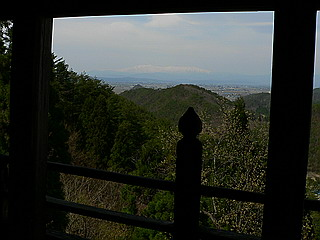

会津の街道沿いを走っていたら山の中に不思議な建物が見えた。
あっ、日本すきま漫遊記で見た左下観音堂に違いない！
早速車を山中に進める。
山道を登っていくと駐車場があり、そこに車を停めてしばし山道を歩いていく。
するといきなり視界が開け、こんな素敵な建物が。
コレは凄い！
山の中に突然現れた楼閣、いや、どちらかというと櫓というか要塞のようではないか！
基本的には懸造の建物なのだが、床が敷設されており、結果三階建てとなっている。
近づいて見ると木の柱がスッと上まで伸びていて、三階とはいえ木造摩天楼のようだ。
さらにこの建物が天長7（830）年に造られたというのも驚きだ。どうみても江戸期の建物だが、それ以上に平安初期にこんな建物がこんな山の中に建てられるかあ？
ま、三徳山投入堂も同時期の建物だというから話としては無理はないのか…
この建物を見て真っ先に思い出したのはコレ。

秩父三十一番札所の観音院にかつてあったという観音堂である。
これは三間四方なので規模的には五間四方のここの観音堂に比べて小規模な建築物なのだが高さはほぼ同じ約14メートルだったという。懸造に床板を張った三階建ての観音堂、という点ではほぼ同じような形状の建物といって良いのではなかろうか。
上右の画像は広重の観音霊験記の一部だが、お堂の右にある青いスロープ（階段？）にご注目いただきたい。
そしてもう一度先の画像をご覧いただく。
この観音堂も建物の左手がスロープになっていて（石垣になっている部分)、そこから三階に直接入るようになっている。
三階から入って堂内を巡り一階に下りていく形式。秩父の観音寺も恐らくそのような形式の仏堂だったのだろう。
一方通行の参拝路を巡る建物…ちなみに秩父の観音寺はこれをさざえ堂と呼んでいたそうだ。
実際にさざえ堂形式の建物であったかどうかは意見が分かれるところだが、建物の中を同じ道を通らず参拝する形式、という意味ではさざえ堂のプロトタイプともいえる建物なのかもしれない。
ちなみに木造二重螺旋構造を持つ会津若松市の旧正宗寺さざえ堂はここからわずか数キロしか離れていない。当然、旧正宗寺さざえ堂を設計したとされる郁堂和尚もこの観音堂の存在は知っていただろう。
以上のごとく、さざえ堂との関係を考えるときにどうしても無視できない仏堂なのだ。
坂道を登り、三階から中に入る。見上げれば普門殿という額がある。
地形的には左側が山、右側が谷になっている。
シンボリックな効果を狙う仏堂であれば普通は山を背にして遠くから見える部分を正面にしたいところだが、何故かここのお堂は正面が左向きになっている。だから左下観音というのだろうか…
三階は中央の部屋を取り囲むようにテラスになっている。
本尊は無頸観音とよばれており、秘仏とされているそうだ。
中央の部屋の左側には短い洞窟があった。
洞窟の中には小さなお地蔵さんが…
…と思ったら小石に頭巾と前掛けが付けられているだけじゃないか。
でもよく見ると、そのうちの幾つかは小石を接着してお地蔵さんみたいなカタチにしてある。
さらによく見たら目までついてるじゃあないっすか！
ご丁寧に石にビッシリと経文が書き込まれていたりして…こっ、怖い…
短い洞窟は貫通しており、外を見ると丁度先程見た須弥壇の裏側が目の前に見える。
考えようによっては洞窟を経由して堂左手から堂裏手までの裏参拝ルートのようにも思える。
でも、洞窟出口から堂の裏の縁側まで微妙な距離があって、しかもその下は10メートルの絶壁、従って移動には命がけのジャンプを敢行しなければならない。
命知らず以外は使えないという究極の参拝ルートだ。
もちろん命大好きな私は無理をせず右手の眺めの良いテラスを歩く。
テラスからは遠く会津盆地や磐梯山が見わたせる。

右奥には二階へ降りる階段がある。
その裏手に先程の洞窟の出口が見える。
やっぱり洞窟からココまで飛び移るのは無理だな…
階段を降りて二階へ。
二階は一部が壁にはなっているが、ほとんど吹きさらしの状態で、何もない。
特に見るべきものもないので更に下へ降りる。
今降りてきた段梯子のすぐ裏に一旦外に出る（吹きさらしなので外も内もないんですけど）スロープが付いている。
ここを進み、岩の上に渡された階段を降りると地上に出る。で、一階へ、というわけである。
一階は二階にあった壁らしきものすらなく、完全な吹きさらし。
意外と二階一階はあっけなく終わってしまった。
下から改めて見上げてみる。
これは想像だが、もしかしたらこの二階一階は後から作られたものなのではなかろうか？
案内板によれば延文3（1358）年に富田祐義が大修理を行ったとある。
富田祐義は当時の会津の戦国大名、葦名氏の家臣だ。
鎌倉幕府滅亡前後の混乱期にあって、この地でも幾つかの戦乱があった。
そういった時代背景を考えると、もしかしたら元々懸造であったこの観音堂を要塞としてリフォームしちゃったのではないだろうか？
もっとも江戸初期に出来たという説もあり、そうなると身も蓋もない話になってしまうのだが。
先程の洞窟の出口を下から見る。
遠くから見る分には行けなくもなさそうだが…やっぱ無理か…
もうひとつ考えられるのは、単純に三階建ての建築を楽しむアトラクションとして床を張った、という事。
私は懸造の仏堂を見るたびに「ここに床を張って部屋にしちゃえばいいのに」、と常々思っていた。
何でかというと、単に面白そうだからである。そう考えた人が私以外にいてもおかしくはないだろう。
でもそれだと二階一階に何もないというのが解せない。アトラクションとしてせめて各階に仏像ぐらいは欲しいでしょ。
結局二階一階の用途は謎のまま不思議な観音堂を後にした。
来る時には気づかなかったが、参道の入口には石柱と小さなお堂があった。
お堂の中には古びた仏像。その両脇に謎の土人形が…
意味がわかんないで怖かったです。
2007.4.